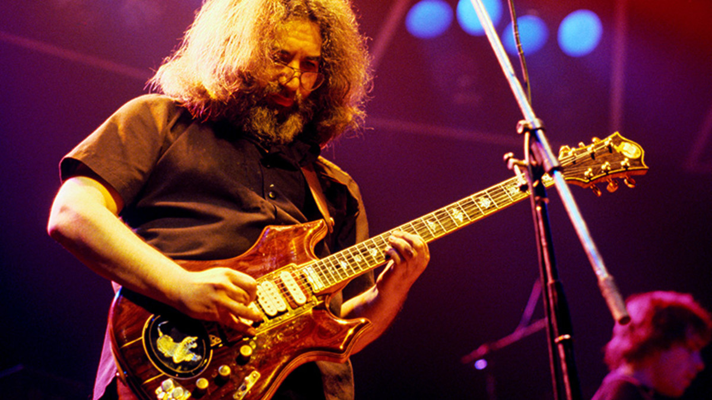

Jerry Garcia
"You need music. I don't know why. It's probably one of those Joseph Campbell questions, why we need ritual. We need magic and bliss, and power and myth and celebration and religion in our lives and music is a good way to encapsulate a lot of it." - Jerry Garcia""

Here is a timeline of Jerry Garcia's life:
- 1942 - Jerome John Garcia is born in San Francisco, CA to Jose Ramon “Joe” Garcia and Ruth Marie “Bobbie” Garcia on August 1st, joining older brother Clifford "Tiff" Ramon.
- 1947 - A wood chopping accident with his older brother at the Garcia family cabin causes Jerry to lose much of the middle finger on his right hand at the age of five.
- 1953 - Garcia is introduced to early rock & roll and rhythm & blues by his brother. He is inspired by Ray Charles, John Lee Hooker, B. B. King, Hank Ballard, and Chuck Berry.
- 1957 - On his fifteenth birthday, Jerry receives an accordion. Disappointed, he complains until the instrument is exchanged for an electric guitar and amplifier, and his stepfather soon introduces him to an open-tuning style.
- 1960 - Hoping to see the world, Jerry enlists in the US Army at age seventeen, and completes basic combat training at Fort Ord near Monterey on the Pacific Coast.
Jerry is discharged from the Army only months after joining, on the basis of “lack of suitability to the military lifestyle." - 1961 - Jerry meets Bob Hunter at Commedia Theater in Palo Alto, they play their only two paying gigs together as Bob & Jerry, earning ten dollars for the shows.
- 1962 - Jerry meets Ron "Pigpen" McKernan on the San Mateo Peninsula coffeehouse circuit.
Bill Kreutzmann meets Jerry at Dana Morgan's music store in Palo Alto when Jerry purchases his father's banjo.
Jerry and Phil Lesh meet during a party in Menlo Park. Phil later suggests recording one of Jerry’s performances to broadcast on local radio station KPFA. The recordings lead to a ninety-minute special broadcast as “The Long Black Veil and Other Ballads: An Evening with Jerry Garcia.”
Bob Weir meets and jams with Jerry at Dana Morgan's music store when Jerry's student doesn't show up for a lesson. - 1965 - Phil Lesh and Bill Kreutzmann join Jerry, Pigpen, and Bob to perform their first gig as The Warlocks at Magoo’s Pizza in Menlo Park, CA.
The Warlocks change their name to Grateful Dead, and perform their first of many shows as the house band at a Ken Kesey Acid Test in San Jose, CA. - 1966 -Jerry and the rest of the band move into a communal house situated at 710 Ashbury Street. It becomes a fixture on the local music scene—providing a venue for many free concerts throughout the year-and-a-half they live there. This leads to the Grateful Dead performing more free concerts than any other band in history.
- 1967 - Mickey is introduced to Jerry through Bill Kreutzmann, and joins the band—rounding out the cornerstone lineup.
- 1969 - Jerry enters his "pedal steel flirtation period," according to Bob Weir, which continues through to 1974. During this time he records one of the best known steel solos on Crosby, Stills, & Nash's "Teach Your Children."
Jerry, along with David Nelson, John “Marmaduke” Dawson, Bob Matthews, and Mickey Hart perform their first show as New Riders of the Purple Sage. Jerry continues as an official member of the band until November 1971. The band frequently opens for the Grateful Dead during this period.
Jerry appears on the cover of Rolling Stone Magazine for the first of twelve total covers. - 1970 - Jerry records his only solo electric guitar performance at MGM Studios in Los Angeles, CA. for the Antonioni movie, Zabriskie Point.
Jerry Garcia & Merl Saunders is formed. - 1973 - Jerry, John Kahn, David Grisman, Peter Rowan, and Richard Greene perform for the first time as Old & in the Way at the Record Plant in Sausalito, CA. Vassar Clements would later replace Greene on fiddle.
- 1975 -Jerry performs under the name Jerry Garcia Band for the first time, alongside John Kahn, Nicky Hopkins, and Ron Tutt at Keystone in Berkeley, CA.
- 1982 -Jerry and Bob Weir appear for the first time on Late Night with David Letterman performing “Deep Elem Blues” and “Monkey & The Engineer.”
- 1985 - Jerry's decade-long heroin addiction culminates in the rest of the Grateful Dead holding an intervention. Given the choice between the band or the drugs, Jerry agrees to check into a rehabilitation center in Oakland, CA.
- 1986 -Jerry lapses into a near-fatal diabetic coma for five days, after which he has to relearn the guitar.
The Grateful Dead return to performing five months after Jerry emerges from his coma - 1990 - Jerry and David Grisman perform together for the first time publicly at Sweetwater in Mill Valley, CA.
- 1994 - The Grateful Dead is inducted into the Rock and Roll Hall of Fame.
- 1995 - Jerry passes away at Serenity Knolls Treatment Center in Forest Knolls, CA, at age fifty-three.
Jerry is celebrated by twenty-five thousand family and friends at a public memorial in Golden Gate Park. Memorials span the nation as people all over mourn his passing.
There's no way to measure his greatness or magnitude as a person or a player. I don;t think any eulogizing will do him justice. He really had no equal. To me, he wasn't only a musician and friend, he was more like a big brother who taught and showed me more than he'll ever know." - Bob Dylan
For more information about Jerry Garcia, visit the Wikipedia entry on him.